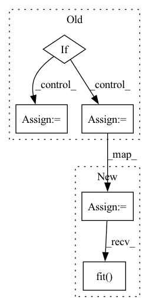

Pattern ID :37562

Before Change
cat_names = ("name-string", "id")
num_buckets = 10
if use_dict:
hashed_cross_op = ops.HashedCross({cat_names: num_buckets})
else:
hashed_cross_op = ops.HashedCross([cat_names], [num_buckets])
columns_ctx = {}
columns_ctx["categorical"] = {}
After Change
cat_names = [["name-string", "id"]]
num_buckets = 10
hashed_cross = cat_names >> ops.HashedCross(num_buckets)
dataset = nvt.Dataset(df)
processor = nvtabular.Workflow(hashed_cross)
processor.fit(dataset)
new_gdf = processor.transform(dataset).to_ddf().compute()
// check sums for determinancy
new_column_name = "_X_".join(cat_names[0])
In pattern: SUPERPATTERN
Frequency: 3
Non-data size: 5
Instances
Fragment ID: 108088641
Project Name: nvidia/nvtabular
Commit Name: 4c92dffac4354d816178264bcfcdec722db2ec1c
Time: 2021-01-05
Author: github@benfrederickson.com
File Name: tests/unit/test_ops.py
M Class Name: AnonimousClass
N Class Name: AnonimousClass
M Method Name: test_hashed_cross(5)
N Method Name: test_hashed_cross(6)
M Parent Class:
N Parent Class:
M File Name: tests/unit/test_ops.py
N File Name: tests/unit/test_ops.py
M Start Line: 1058
M End Line: 1085
N Start Line: 659
N End Line: 674
'>
Before Change
train_dataset = build_dataset(cfg.data.train, "train")
val_dataset = build_dataset(cfg.data.val, "test")
if len(cfg.device.gpu_ids) > 1:
print("rank = ", local_rank)
num_gpus = torch.cuda.device_count()
torch.cuda.set_device(local_rank % num_gpus)
dist.init_process_group(backend="nccl")
train_sampler = torch.utils.data.distributed.DistributedSampler(train_dataset)
train_dataloader = torch.utils.data.DataLoader(train_dataset, batch_size=cfg.device.batchsize_per_gpu,
num_workers=cfg.device.workers_per_gpu, pin_memory=True,
collate_fn=collate_function, sampler=train_sampler,
drop_last=True)
After Change
model_resume_path = os.path.join(cfg.save_dir, "model_last.ckpt") if "resume" in cfg.schedule else None
trainer = pl.Trainer(default_root_dir=cfg.save_dir,
max_epochs=cfg.schedule.total_epochs,
gpus=cfg.device.gpu_ids,
check_val_every_n_epoch=cfg.schedule.val_intervals,
accelerator="ddp",
log_every_n_steps=cfg.log.interval,
num_sanity_val_steps=0,
resume_from_checkpoint=model_resume_path,
callbacks=[ProgressBar(refresh_rate=0)] // disable tqdm bar
)
trainer.fit(task, train_dataloader, val_dataloader)
if __name__ == "__main__":
args = parse_args()
'>
Fragment ID: 108088631
Project Name: rangilyu/nanodet
Commit Name: 6c7dd670c9bc0311a26bfe0ebb775726902db779
Time: 2021-04-11
Author: lyuchqi@gmail.com
File Name: tools/train.py
M Class Name: AnonimousClass
N Class Name: AnonimousClass
M Method Name: main(1)
N Method Name: main(1)
M Parent Class:
N Parent Class:
M File Name: tools/train.py
N File Name: tools/train.py
M Start Line: 43
M End Line: 87
N Start Line: 51
N End Line: 91
'>
Before Change
cont_names = ["x", "y"]
boundaries = [[-1, 0, 1], [-4, 100]]
if use_dict:
bucketize_op = ops.Bucketize(
{name: boundary for name, boundary in zip(cont_names, boundaries)}
)
else:
bucketize_op = ops.Bucketize(boundaries, cont_names)
columns_ctx = {}
columns_ctx["continuous"] = {}
After Change
cont_names = ["x", "y"]
boundaries = [[-1, 0, 1], [-4, 100]]
bucketize_op = ops.Bucketize({name: boundary for name, boundary in zip(cont_names, boundaries)})
bucket_features = cont_names >> bucketize_op
processor = nvtabular.Workflow(bucket_features)
processor.fit(dataset)
new_gdf = processor.transform(dataset).to_ddf().compute()
for col, bs in zip(cont_names, boundaries):
assert np.all(new_gdf[col].values >= 0)
'>
Fragment ID: 108088635
Project Name: nvidia/nvtabular
Commit Name: 4c92dffac4354d816178264bcfcdec722db2ec1c
Time: 2021-01-05
Author: github@benfrederickson.com
File Name: tests/unit/test_ops.py
M Class Name: AnonimousClass
N Class Name: AnonimousClass
M Method Name: test_bucketized(5)
N Method Name: test_bucketized(6)
M Parent Class:
N Parent Class:
M File Name: tests/unit/test_ops.py
N File Name: tests/unit/test_ops.py
M Start Line: 1089
M End Line: 1107
N Start Line: 680
N End Line: 692